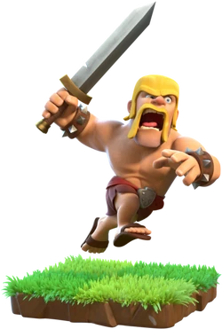
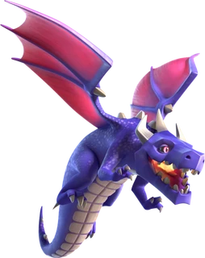
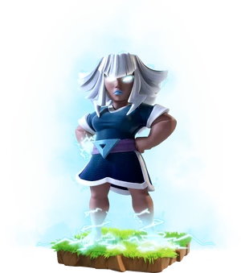
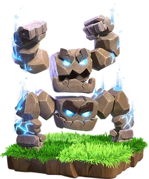
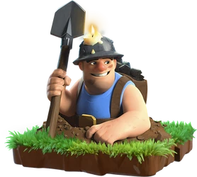
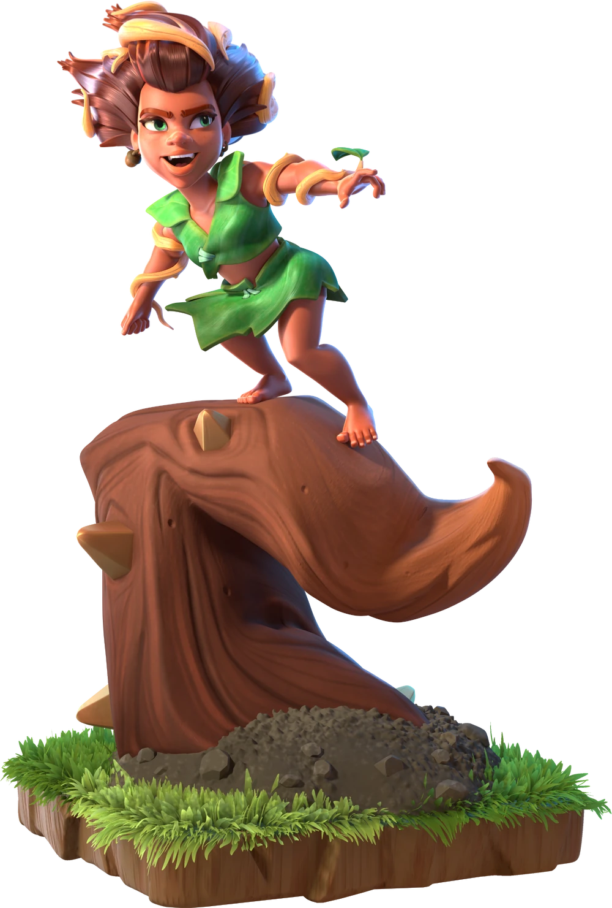
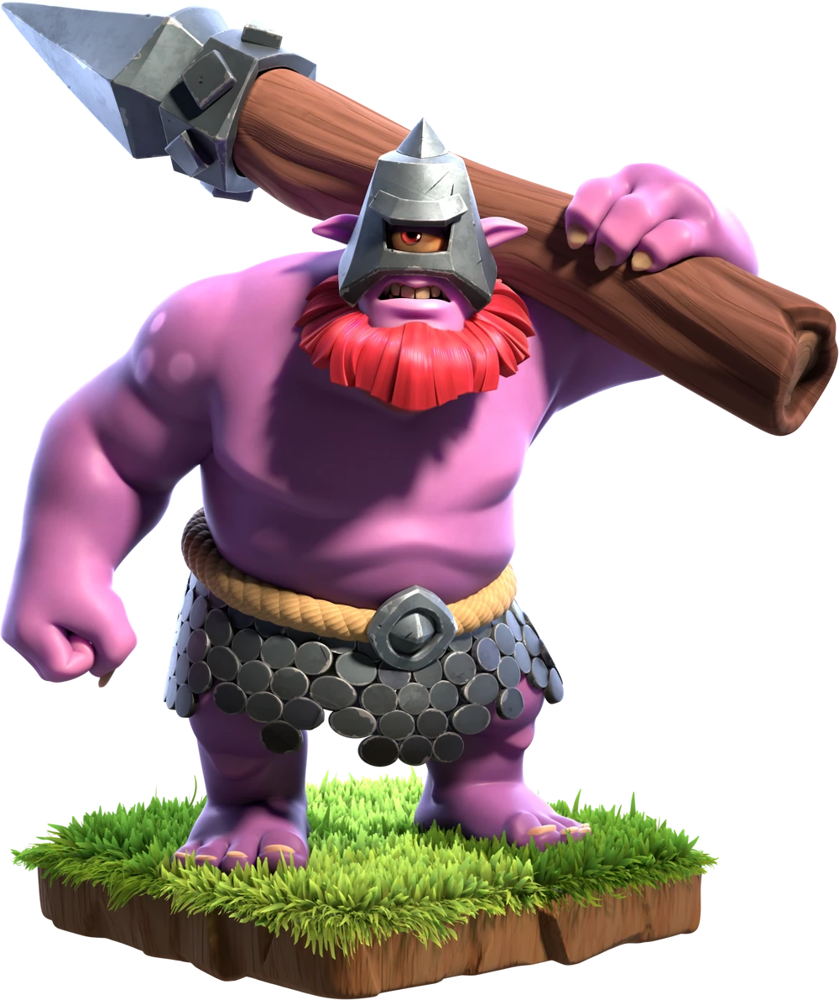
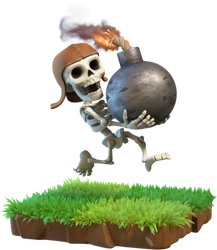
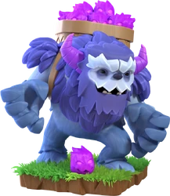

Archer
Pasukan jarak jauh yang gesit, andalan untuk menyerang dari kejauhan dengan panah.
Baby Dragon
Naga muda yang menyemburkan api. Saat sendirian, kekuatannya meningkat drastis.

Barbarian
Pasukan jarak dekat yang tangguh dan murah. Tulang punggung setiap serangan darat.

Dragon
Naga dewasa yang menyerang udara dan darat sekaligus dengan semburan api yang kuat.

Electro Dragon
Naga listrik yang menyerang dengan rantai petir, bisa mengenai beberapa target sekaligus.

Electro Titan
Raksasa bertenaga listrik dengan HP tinggi, melindungi pasukan di belakangnya.

Giant
Raksasa bertahan tinggi yang selalu menyerang pertahanan musuh sebagai tameng utama.

Goblin
Pasukan tercepat yang fokus menyerang sumber daya. Ideal untuk farming gold dan elixir.

Healer
Malaikat penyembuh yang memulihkan HP pasukan darat secara terus-menerus saat pertempuran.

Hog Rider
Penunggang babi yang melompati tembok dan langsung menyerang pertahanan musuh.

Meteor Golem
Golem berbatu yang sangat kuat, meledak saat mati dan merusak area sekitarnya.

Miner
Penggali bawah tanah yang muncul di mana saja, menghindari jebakan dan tembok musuh.

P.E.K.K.A
Mesin perang berlapis baja dengan damage tertinggi, mampu menghancurkan pertahanan apapun.

Root Rider
Penunggang akar pohon yang menghancurkan tembok dan pertahanan dengan kekuatan alam.

Thrower
Pasukan yang melempar bom besar dari jarak jauh dengan area damage yang luas.

Wall Breaker
Pasukan berani mati yang khusus menghancurkan tembok agar pasukan lain bisa masuk.

Wizard
Penyihir dengan area damage tinggi, efektif melawan gerombolan pasukan musuh sekaligus.

Yeti
Makhluk salju besar yang membawa Yetimite kecil, makin berbahaya saat terluka.